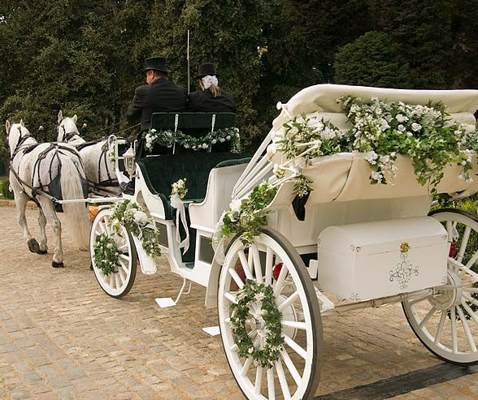

Only one person in this world knows the word that opens this.
If that is you — type it below.
A love letter · 21+ years · forever & always
From a girl of 15 at a Wendy's window
to the woman who rode to you on a horse and carriage —
you have always been some kind of wonderful.
↓ scroll ↓
How it all began
I was 15 years old. You found me. You "stalked" me — and I say that with the biggest smile on my face because you know exactly what I mean. Something about me caught your eye and you weren't letting go. I didn't know it then, but God was already writing our story. He just hadn't shown us the ending yet.
Here is the part that still makes me laugh and cry at the same time. When I ran back into you — you were a bet. A childhood friend's dare. A wager. And look at us now. Whoever made that bet had no idea they were setting in motion the greatest love story of my life. God has a sense of humor, and I am so grateful He does.
I watched you change, David. I watched Scooby grow into the man who stood at the end of that aisle waiting for me. I watched you become a father — a great daddy. I watched you become a great man, quietly and steadily, the way real things grow. That transformation — I had a front row seat to all of it. And I have loved every single version of you along the way.
The Bible says two become one. That is what happened to us. Two separate lives, two separate paths — and then God pulled them together and said this. This is it. We built a home. We built a family. We built something that storms have tried to tear apart and could not. Because what God joins together, no storm is strong enough to break — not if we choose each other.
We have three beautiful boys, David. Three. Our hearts walking around outside our bodies. One of them — our precious baby — is in heaven now, watching over us, cheering us on. He is the reason we carry a piece of forever with us everywhere we go. He is the reason we know that love does not end. And the two still here need to see their parents choose each other. Every single day.
My body is fighting me every day. Broken hips. My back. My neck. A shattered pelvis and sacrum. Hernias. I am in a walker, David. I am fighting hard to stay standing — to keep going, to keep building something for us. And through all of it, the one thing I need more than anything is you. Not just beside me. With me. Pulling with me. Rising with me. The way you always did when you were fully, completely you.
The day everything became real

"Some Kind of Wonderful" was playing.
You were standing there waiting for me.
That was the best moment of my entire life.
From my heart to yours
My Dingus,
Do you remember a girl at Wendy's? Fifteen years old, no idea what was coming — and a boy who just could not stay away. That was us before we even knew what us meant. And then life happened, and time passed, and somehow — the way only God can arrange things — you came back. Or maybe I came back. Either way, we found each other again. And this time we held on.
I need you to know something. I have watched you your whole life, David. I watched Scooby become the man who stood at the end of that aisle waiting for me. I watched you become a daddy — a great daddy. I watched you become a great man. Quietly. Steadily. The way real things grow. And I have been so proud of you. Every single version of you. Even the ones you were not proud of yourself.
The Bible says two become one. That is what happened to us. Two lives, two paths, one God who said — them. Those two. And we built something real. A home. A family. Three boys. One in heaven watching over us right now, I know it. And two here on earth who are watching us — watching to see if their parents still choose each other when it is hard. I want them to see us choose each other, David. I want that more than almost anything.
I know we have drifted. I know the weight of everything — the loss, the pain, the years of surviving — takes something out of a person. Out of a marriage. I am not here to point fingers. I am here because I miss you. I miss my man. I miss the way it felt when we were in sync, when we were one unit, two fronts united, pulling together toward the same thing.
My body is broken, David. More than most people know. I fight every single morning just to get up. And through all of it — all of it — you are still the safe place my heart reaches for. You are still the person I want next to me when it gets dark. You have always been that. You always will be.
I am not asking for perfect. I am asking for present. I am asking you to come back to me — not from far away, but from wherever inside yourself you have been hiding. Because I see you. I have always seen you. And what I see is worth every storm we have ever been through and every storm still coming.
Let's rise together, Dingus. Let's be the love story we always were — the one that started with a girl at a Wendy's window and a boy who just couldn't stay away. The one that ended up on a horse and carriage with "Some Kind of Wonderful" playing. That love story. Our love story.
I love you. I have always loved you. I will always love you.
Come back to me. I am right here.
Forever your Baby,
Serena 💛
The soundtrack of us
🎵 Grand Funk Railroad — "Some Kind of Wonderful"
Our wedding song. You were waiting. I was coming to you on a horse and carriage. That moment lives in me forever.
🎵 Brad Paisley — "Then"
I loved you then. I love you even more now. That is the whole truth of us.
🎵 Keith Urban — "Making Memories of Us"
Every day we built something together. Every day still counts. We are not done making memories.
🎵 Keith Urban — "Stupid Boy"
For every time you didn't see what you had right in front of you. You always came back. That is what matters.
My promise to you
I am not giving up on us. Not now. Not ever.
We have been through too much to let the storms win.
We have a son in heaven cheering us on.
We have two boys here watching us choose love.
We have 21 years of proof that we are stronger together.
You were a bet once, David.
Best bet anyone ever made.
So let's rise. Let's pull together.
Two becoming one — the way it was always meant to be.
Come back to me, Dingus. I am right here.